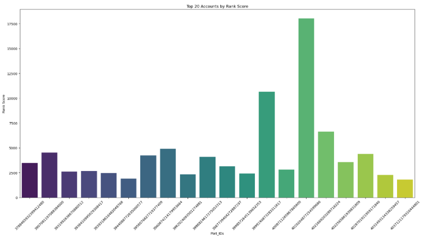

This project involved building a ranking system to evaluate and rank trading portfolios based on various financial metrics. These metrics assess profitability, risk, and consistency in trading. The key metrics include:
Below is an example of the bar chart that shows the ranking of the top 20 portfolios:
This ranking system provides insights into the performance of various portfolios, helping investors make informed decisions on portfolio optimization and strategy.